|
|
| sea stars text index | photo index |
| Phylum Echinodermata > Class Stelleroida > Subclass Asteroidea |
| Crown
sea star Aquilonastra coronata Family Asterinidae updated Jul 2020 Where seen? This little sea star is sometimes seen, usually under stones at the mid-water line, or on coral rubble on our Northern shores. Sometimes it may be seen wandering among seaweeds far from the midwater line, especially at night. In some locations at some times of the year, they can be found in large numbers, but usually well spaced apart. According to Marsh and Fromont, it is found under boulders on mud and silty sand in Australia. It was previously known as Asterina coronata. Features: Diameter with arms 3-5cm. A plump sea star (not flat). Usually 5 arms, short fat semi-cylindrical with rounded tips. Upperside has tiny holes through which short stubby transparent finger-like structures (papulae) emerge. Colours plain or mottled beige, brown or grey. Sometimes, bright orange ones are seen! Underside pale without markings. Tube feet slender tipped with suckers. It can stick its 'stomach' out of its mouth. Sometimes, individuals are seen 'carrying' bits of debris. Tiny brittle stars and tiny snails are sometimes seen on the underside. |
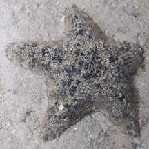 Changi, Aug 11 |
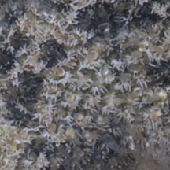 Upperside. |
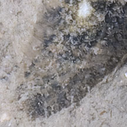 Stubby papulae on the upperside. |
|
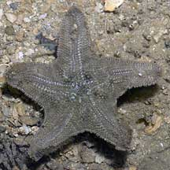 Underside. Pulau Sekudu, Jul 06 |
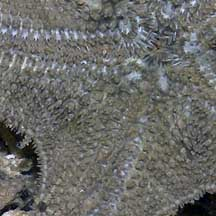 |
|
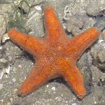 Chek Jawa, Jul 05 |
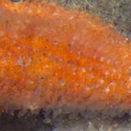 Stubby papulae on the upperside. |
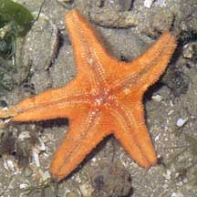 |
| Crown sea stars on Singapore shores |
On wildsingapore
flickr
|
| Other sightings on Singapore shores |
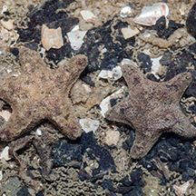 Pulau Ubin OBS, Jan 16 Photo shared by Marcus Ng on facebook. |
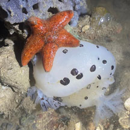 Beting Bronok, Jul 23 Photo shared by Kelvin Yong on facebook. |
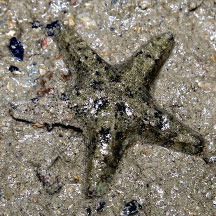 Pulau Hantu, May 19 Photo shared by Jianlin Liu on facebook. |
References
|